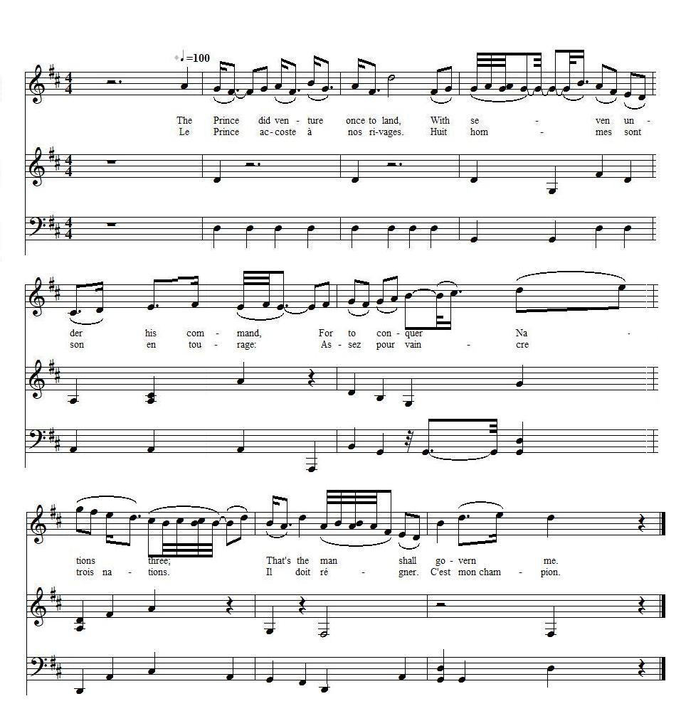

A Song to the tune "To ease his Heart"
Chant sur l'air de "Pour apaiser son cœur"
From " The True Loyalist ", page 25, 1779
Tune - Mélodie"To ease his Heart"
from the Overture to "Thomas and Sally" (via "Youtube")
Sequenced by Christian Souchon
|
To the tune:
In the "True Loyalist" the direction is to sing this song to the tune "To ease his heart and own his flame". In the collection "The Prize of Industry." Sadler's Wells, 1793, is included a song by Mark Lonsdale, titled "How slowly turns her spinning wheel". "I see that this song," writes Mr. William Chappell (1809 - 1888, an English musicologist), "is to the tune and in the measure of the following: To ease his heart, and own his flame, Blythe Jockey to young Jenny came ; But tho' she liked him passing weel, She careless turn'd her spinning wheel... "These words were written to a favorite Scotch air (so called, but not really Scotch) in the Overture to [the ballad opera ] "Thomas and Sally", and composed by Thomas Augustine Arne (1710 - 1778, an English composer best known for the patriotic song "Rule Britannia!" ). The air was long popular, and that no doubt was the inducement for Mark Lonsdale to write new words to it." |
 |
A propos de la mélodie:
Dans le "Vrai Loyaliste" on demande de chanter le texte sur l'air de "Pour soulager son cœur et maîtriser sa flamme". Dans le recueil "Chants à la gloire de l'industrie", Sadler's Wells, 1793, on trouve un chant signé Mark Lonsdale, intitulé "Il est bien lent, ton rouet". "Je vois que ce chant", écrit le musicologue anglais William Chappell (1809 - 1888), est composé sur l'air et selon le rythme du chant suivant: Pour calmer son cœur et sa flamme Le gai Jockey va voir Jenny; Mais, bien qu'elle n'aime que lui, Son rouet tourne, imperturbable... "Ce texte fut écrit sur un air écossais fameux (bien que pas vraiment écossais) qui paraît dans l'ouverture de [l' opéra-ballades ] "Thomas et Sally" de Thomas Augustine Arne (1710 - 1778, compositeur anglais surtout connu pour le chant patriotique "Règne Britannia" ). Cet air a longtemps fait fureur et c'est sans doute cela qui poussa Lonsdale à lui adjoindre de nouvelles paroles." |
|
To the lyrics:
The first stanza appears to be a version of the last four lines of the Second Set (3° "Charlie's Landing") of "To Daunton me" in Hogg's "Relics", 2nd volume, 1821: At Moidart our young Prince did land, With seven men at his right hand, And a' to conquer nations three: That is the lad to wanton me. |
A propos du texte:
La 1ère strophe semble être une variante des 4 premières lignes du Second Set (3° "Charlie's Landing") de "To Daunton me" des "Reliques" de Hogg, 2ème volume, 1821: A Moidart il débarque. A sa droite seulement Sept hommes pour trois trônes. Voilà l'homme qui me rend tout confiant. |

|
To ease his Heart
A SONG 1. The P[rinc]e did venture once to land, With seven under his command, For to conquer Nations three; That's the man shall govern me. 2. Justly may he claim the crown He brave ancestors wore so long; Though they thought fit to banish thee, The restoration I hope to see. 3. It was a cursed usurping crew That from the true K[in]g took his due, And sent him far across the sea; J[ame]s the Seventh, the same was he. 4. They J[ame]s the Seventh away did send, How could that infant them offend? That he too banished must be, To b'reave my native Prince from me. 5. But his brave Son in battle bright Shall recover what's his right; All the Clans shall fight for thee; Glorious C[harle]s shall govern me. 6. Fierce as a lion uncontrol'd, As an angel soft and kind, Merciful and just is he; Glorious C[harle]s shall govern me. Source: "The True Loyalist; or, Chevaliers's Favourite: being a collection of elegant songs, never before printed. Also several other loyal compositions, wrote by eminent hands." Printed in the year 1779. |
Pour soulager son cœur
CHANT 1. Le Prince accoste à nos rivages. Huit hommes dans son entourage: Assez pour vaincre trois nations. Il doit régner. C'est mon champion. 2. Il veut la couronne à bon droit: Ses braves aïeux, autrefois, L'ont portée. Mais on l'a banni. Mon espoir: le voir rétabli. 3. Une clique de conjurés A pu le vrai Roi détrôner Le chassant au-delà des mers: Jacques VII subit ce revers. 4. Jacques VII une fois chassé, Son fils les a-t-il offusqués, Au point de le bannir aussi Et nous priver ainsi de lui? 5. Mais ce fils est brave au combat Et saura recouvrer ses droits. Tous les Clans combattront pour toi. Charles, nous te voulons pour roi! 6. Tu sais allier du lion la rage A la bienveillance de l'ange Toi, juste et clément à la fois, Charles, nous te voulons pour roi! (Trad. Christian Souchon (c) 2011) |